조선기사 (2010-03-07 기출문제)
1과목: 조선공학일반
1. 다음 중 조종성능과 관련이 없는 시운전시험은?
- 타력시험(Inertia test)
- 지그재그시험(Zig~Zag test)
- 선회시험(Turnign circle test)
- 비상정지시험(Crash stop test)
(정답률: 알수없음)

2. 선박 트림(Trim)의 정의로 옳은 것은?
- 선수 홀수와 선미 홀수와의 차
- 선수 홀수와 선체 중앙부 홀수와의 차
- 킬(keel)이 선수미 방향으로 기울어진 각도
- 선체 중앙부에서 수면과 상갑판 사이의 거리
(정답률: 알수없음)
3. 초기 복원력이 큰 배를 설계하고자 할 때의 방법으로 틀린 것은?
- 홀수를 작게 한다.
- 상부 구조물을 가볍게 한다.
- 가능한 선박의 폭을 넓게 한다.
- 상부 구조물의 높이를 높게 한다.
(정답률: 알수없음)
4. 맞파도(Head sea)나 추파(Following sea)와 같은 종파와 연성되어 항해 중인 선박에 직접적으로 일어나는 선체운동으로만 짝지어진 것은?
- 상하동요(Heaving)와 종동요(Pitching)
- 상하동요(Heaving)와 횡동요(Rolling)
- 횡동요(Rolling)와 수평동요(Swaying)
- 선수동요(Yawing)와 종동요(Pitching)
(정답률: 알수없음)
5. 진수시 고정대의 경사 때문에 중력에 의하여 미끄러지는 시동력을 방지하는 장치를 무엇이라 하는가?
- 반목(Block)
- 포핏(Poppel)
- 트리거(Trigger)
- 새들(Saddle)판
(정답률: 알수없음)
6. 선박의 종류에 따라 일반적으로 사용되는 톤수를 짝지은 것으로 틀린 것은?
- 군함 – 배수량
- 유조선 – 재화중량
- 화물선 – 총톤수, 재화중량
- 상선 – 순톤수 이외의 모든 톤수
(정답률: 알수없음)
7. 다음 중 구상선수 선형의 주된 역할은?
- 조정성능의 증대
- 조파저항의 감소
- 점성저항의 감소
- 선수부의 강도 증대
(정답률: 알수없음)
8. 메타센터 높이가 1m, 횡요주기가 15sec 인 선박의 세로축에 관한 질량 관성반경은 약 몇 m 인가?
- 4.5
- 5.5
- 6.5
- 7.5
(정답률: 알수없음)
9. 본전(Bonjean)곡선을 이용하여 알 수 없는 것은?
- 배수용적
- 가로메타센터반지름
- 부심의 위치
- 파랑 중에서의 부심
(정답률: 알수없음)
10. 선박의 화물창 내에 “Entry guide”, “Cell guide”를 설치하여 화물의 적하를 용이하게 하는 선박은?
- 목재 운반선
- 컨테이너선
- 광석 운반선
- 자동차 전용 운반선
(정답률: 알수없음)
11. 단면적 곡선(Sectional area curve)으로부터 구할 수 있는 선형계수는?
- 방형계수
- 수선면적계수
- 주형계수
- 중앙 횡단면계수
(정답률: 알수없음)
12. 그림과 같은 선체측면에서 EBCF의 면적을 구하는 식은?
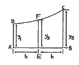
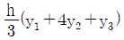
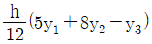
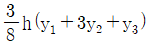
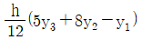
(정답률: 알수없음)
13. 선도(Lines) 중 반폭도 상에서 버톡라인(Buttock line)은 어떻게 나타나는가?
- 선체 전체 부위에 대해서 곡선이다.
- 선체 전체 부위에 대해서 직선이다.
- 선수미에서는 직선 중앙부에서는 곡선이다.
- 중앙부에서는 직선, 선수미부에서는 곡선이다.
(정답률: 알수없음)
14. 어떤 홀수에 있어서 센터미터당 배수톤수(TPC)가 20ton이면, 이 홀수에서의 수선면적은 약 몇 m2 인가? (단, 해수의 비중량은 1.025 ton/m3 이다.)
- 1.95
- 195.1
- 1951.2
- 19512
(정답률: 알수없음)
15. 반지름(r)이 10cm 인 구가 반만 물에 잠겨 있을 때 이 배의 방형계수는 얼마인가?
- 0.523
- 0.549
- 0.618
- 0.692
(정답률: 알수없음)
16. 다음 중 선박의 복원성 한계각도(대각도 경사시의 복원성) 증가에 가장 큰 영향을 주는 것은?
- 폭의 증가
- 흘수의 증가
- 건현의 증가
- 텀블홈의 증가
(정답률: 알수없음)
17. 다음 고속정 가운데 공기압을 이용하여 수면이나 지면으로부터 완전 부양하여 운항하는 선박은?
- 활주형선
- 수중익선
- 표면효과익선(SES)
- 호버크래프트(Hover Craft)
(정답률: 알수없음)
18. 예인수조(Towing Tank)에서 정수중의 저항측정을 위한 모형실험을 할 때 모형선과 실선에 대한 특성값 중 현실적으로 서로 같은 상태에서 실험할 수 없는 것은?
- 레이놀드수
- 속장비
- 폭·홀수비
- 프루드수
(정답률: 알수없음)
19. 선박을 선루의 배치 또는 형태에 따라 분류할 때 속하지 않는 것은?
- 선망선(Purse seiner)
- 삼도형선(Three seiner)
- 차량갑판선(Shelter decker)
- 저선수루선(Sunken forcastle)
(정답률: 알수없음)
20. 선박의 수선면에 대한 반폭면적 함수값이 250, 선체중앙에 대한 수선면의 반폭면적모멘트 함수값이 선미쪽이 74만큼 많다면 수선면적중심의 위치를 옳게 나타낸 것은? (단, 스테이션 간격은 12m 이다.)
- 선미쪽으로 3.55m
- 수선면 아래로 3.65m
- 선수쪽으로 3.44m
- 선체 중심선에서 3.65m
(정답률: 알수없음)
2과목: 재료역학
21. 주응력에 대한 설명 중 틀린 것은?
- 주응력 상태에서 전단응력은 0 이다.
- 주응력은 전단응력이다.
- 최대 전단응력은 주응력의 최대, 최소값의 평균치이다.
- 평면응력에서 주응력은 2개이다.
(정답률: 알수없음)
22. 폭 20cm, 높이 30cm의 직사각형 단면을 가진 길이 300cm의 외팔보는 자유단에 최대 몇 kN의 하중을 가할 수 있는가? (단, 허용 굽힘응력은 σx = 15MPa 이다.)
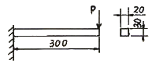
- 12
- 15
- 30
- 90
(정답률: 알수없음)
23. 다음 중 기둥의 좌굴에 대한 설명으로 옳은 것은?
- 좌굴이란 기둥이 압축하중을 받아 길이 방향으로 변위되는 현상을 말한다.
- 도심에 압축하중이 작용하는 기둥의 좌굴은 안정성과 관련되어 있다.
- 좌굴에 대한 임계하중은 길이가 긴 기둥일수록 커진다.
- 편심 압축하중을 받는 기둥에서는 하중이 커져도 길이 방향 변위만 발생한다.
(정답률: 알수없음)
24. 등분포 하중을 받고 있는 단순보와 양단 고정보의 중앙점에서의 최대 처짐량의 비는? (단, 보의 굽힘강성 EI는 일정하다.)
- 3 : 1
- 5 : 1
- 24 : 1
- 48 : 1
(정답률: 알수없음)
25. 길이가 L인 단면적이 A인 봉의 단면에 수직 하중이 작용하고, 작용하중 방향으로 변형률 ε이 발생하였다면 이 봉에 저장된 탄성에너지 U는 어떻게 표현되는가? (단, 봉의 탄성계수는 E 이다.)
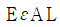
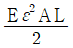
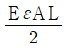
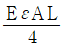
(정답률: 알수없음)
26. 길이 15m, 지름 10mm의 강봉에 8kN의 인장 하중을 걸었더니 탄성 변형이 생겼다. 이 때 늘어난 길이는? (단, 이 강재의 탄성계수 E = 210 GPa 이다.)
- 7.3mm
- 7.3cm
- 0.73mm
- 0.073mm
(정답률: 알수없음)
27. 지름 3mm의 철사로 평균지름 75mm의 압축코일 스프링을 만들고 하중 10N에 대하여 3cm의 처짐량을 생기게 하려면 감은 회수(n)는 대략 얼마로 해야 하는가? (단, 전단 탄성계수 G = 88GPa 이다.)
- n = 8.9
- n = 8.5
- n = 5.2
- n = 6.3
(정답률: 알수없음)
28. 단면적이 같은 원형과 정사각형의 단면 계수의 비는?
- 1 : 0.509
- 1 : 1.18
- 1 : 2.36
- 1 : 4.68
(정답률: 알수없음)
29. 지름 d의 축에 암(arm)을 달고, 그림과 같이 하중 P를 가할 때 축에 발생되는 최대 비틀림 전단응력은?
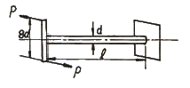
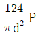
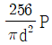
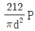
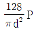
(정답률: 알수없음)
30. 그림과 같이 전체 길이가 3L인 외팔보에 하중 P가 B점과 C점에 작용할 때 자유단 B에서의 처짐량은? (단, 보의 굽힘강성 EI는 일정하고, 자중은 무시한다.)
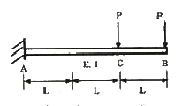
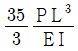
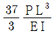
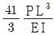
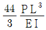
(정답률: 알수없음)
31. 지름 7mm, 길이 250mm인 연강 시험편으로 비틀림 실험을 하여 얻은 결과, 토크 4.08N·m에서 비틀림 각이 8°로 기록되었다. 이 재료의 전단 탄성계수는 약 몇 GPa 인가?
- 64
- 53
- 41
- 31
(정답률: 알수없음)
32. 최대 사용강도(σmax) = 240MPa, 지름 1.5m, 두께 3mm의 강재 원통형 용기가 견딜 수 있는 최대 압력은 몇 kPa 인가? (단, 안전계수(SF)는 2 이다.)
- 240
- 480
- 960
- 1920
(정답률: 알수없음)
33. 그림과 같은 돌출보가 있다. ωℓ = P 일 때 이 보의 중앙점에서 굽힘 모멘트가 0 이 되기 위한 길이의 비 a/ℓ 는? (단, 보의 자중은 무시한다.)
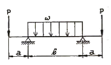
- 1/4
- 1/8
- 1/16
- 1/24
(정답률: 알수없음)
34. 단면은 폭 5cm×높이 3cm, 길이가 1m의 단순 지지보가 중앙에 집중하중 4kN을 받을 때 발생하는 최대 굽힘응력은 약 몇 MPa 인가?
- 133
- 155
- 143
- 125
(정답률: 알수없음)
35. 그림과 같이 길이가 동일한 2개의 기둥 상단에 중심 압축하중 2500N이 작용할 경우 전체 수축량은 약 몇 mm 인가? (단, 단면적 A1 = 1000mm2, A2 = 2000mm2, 길이 L = 300mm, 재료의 탄성계수 E = 90GPa 이다.)
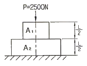
- 0.625
- 0.0625
- 0.00625
- 0.000625
(정답률: 알수없음)
36. 직사각형 단면(폭×높이)이 4cm×8cm이고 길이 1m의 외팔보의 전 길이에 6kN/m의 등분포하중이 작용할 때 보의 최대 처짐각은? (단, 탄성계수 E = 210GPa 이고 보의 자중은 무시한다.)
- 0.0028 rad
- 0.0028°
- 0.0008 rad
- 0.0008°
(정답률: 알수없음)
37. 연강 1cm3의 무게는 0.0785N 이다. 길이 15m의 둥근 봉을 매달 때 봉의 상단 고정부에 발생하는 인장응력은 몇 kPa 인가?
- 0.118
- 1177.5
- 117.8
- 11890
(정답률: 알수없음)
38. 그림과 같은 구조물에 1000N의 물체가 매달려 있을 때 두 개의 강선 AB와 AC에 작용하는 힘의 크기는 약 몇 N 인가?
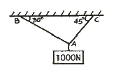
- AB = 707, AC = 500
- AB = 732, AC = 897
- AB = 500, AC = 707
- AB = 897, AC = 732
(정답률: 알수없음)
39. 어떤 탄성재료의 탄성계수 E와 전단 탄성계수 G 사이에 성립하는 관계식으로 맞는 것은? (단, ν는 재료의 포아송(Poisson) 비이다.)
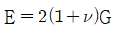
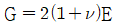
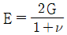
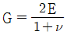
(정답률: 알수없음)
40. 반지름이 r인 원형 단면의 단순보에 전단력 F가 가해졌다면, 이 때 단순보에 발생하는 최대 전단응력은?
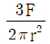
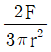
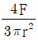
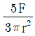
(정답률: 알수없음)
3과목: 조선유체역학
41. 마하수(Mach Number)에 대한 설명으로 틀린 것은?
- 마하수는 탄성력에 대한 중력의 비로 정의한다.
- 유체의 점성효과와 압축성 효과를 동시에 고려한다면 레이놀드수와 마하수를 같게 놓는다.
- 충격 실속은 일반적으로 임계치보다 약간 높은 마하수에서 발생한다.
- 마하수는 유체의 내부에너지에 대한 운동에너지의 비라고 표현할 수도 있다.
(정답률: 알수없음)
42. 비중이 0.8인 기름이 직경 100mm인 노즐을 통하여 10m/s로 분사되어 고정된 평판에 수평으로 충돌할 때, 고정된 평판에 작용하는 수평방향의 힘은 약 몇 kgf 인가?
- 34.11
- 44.11
- 54.11
- 64.11
(정답률: 알수없음)
43. 높이가 6m 이고 최대 지름이 3m인 개방된 원추형 용기가 20℃의 물로 채워져 5m/s2의 감속도로 수직하방으로 운동하고 있다면 용기의 밑바닥에 작용하는 물의 압력은 약 몇 kPa 인가? (단, 밀도는 998.3 kg/m3 이다.)
- 28.8
- 57.5
- 88.6
- 118.6
(정답률: 알수없음)
44. 다음 중 유의파고에 대한 설명으로 옳은 것은?
- 관측한 파고 중 가장 큰 파고
- 항해 중에 가장 유의해야 하는 파고
- 관측힌 파의 평균파고의 3배에 해당하는 파고
- 관측한 파를 큰 파고 순으로 하여 1/3개의 파의 평균파고
(정답률: 알수없음)
45. 다음 중 정상류(定常流)인 것은?
- 관로의 밸브를 조작중인 흐름
- 수동펌프에서 송출되는 물의 흐름
- 직선 관로 속을 일정 속도로 흐르는 흐름
- 압력계가 흔들리고 있는 펌프 송출관 속의 물의 흐름
(정답률: 알수없음)
46. 다음 중 체적탄성계쑤에 대한 설명으로 틀린 것은?
- 체적탄성계수의 단위는 압력과 같다.
- 체적탄성계수의 역수를 압축률이라 한다.
- 체적탄성계수는 비압축성 유체일수록 작다.
- 체적탄성계수는 유체에 가해진 압력의 변화량에 비례한다.
(정답률: 알수없음)
47. 반경이 1m인 두 개의 반구를 서로 맞댄 후 내부를 진공으로 만든 후 표준대기압에서 이 구의 한 쪽 반구를 기둥에 묶고, 다른 쪽 반구를 접촉면에 수평으로 당겨 다시 분리하려 할 때, 필요한 힘은 약 몇 kN 인가?
- 40
- 79
- 158
- 317
(정답률: 알수없음)
48. 유체가 물체면에서 박리(Separation)가 시작되는 박리점의 속도구배 조건을 옳게 나타낸 것은? (단, du/dy 는 고체면을 따라 흐르는 유체의 면가까이에서의 속도구배이다.)
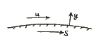
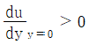
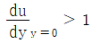
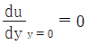
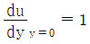
(정답률: 알수없음)
49. 관로의 유속을 피토(Pitot)관으로 측정하니 마노미터의 높이가 12cm 였다면 이 때 유속은 약 몇 m/s 인가?
- 1.38
- 1.53
- 13.8
- 15.3
(정답률: 알수없음)
50. 길이 200m, 항해속도 20knot 인 선박에 대하여 길이 4m의 모형선으로 시험하는 경우, 파형의 상사를 이루려면 모형선의 예인속도는 몇 knot 인가?
- 0.4
- 2.83
- 7.50
- 9.83
(정답률: 알수없음)
51. 시위선이 1.5m 인 익형이 13m/s 의 속도로 공기속을 움직일 때 양력계수는 0.36이고 공기의 비중량은 1.1 kg/m3 이라면 단위 폭당 받는 양력은 약 몇 kgf 인가?
- 5.1
- 6.7
- 7.4
- 9.5
(정답률: 알수없음)
52. 그림에서 U자관의 유체는 수은이고, 관 A속에는 비중 1.025인 바닷물이 들어있다면 관 A의 중심에서 절대압력은 약 몇 kgf/cm2 인가? (단, h1 = 200mm, h = 700mm, 대기압은 760 mmHg 이다.)
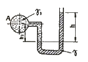
- 0.197
- 1.97
- 0.179
- 1.79
(정답률: 알수없음)
53. 수평원관 속에 층류유동이 흐르고 있을 때 최대유속은 평균유속의 몇 배인가?
- √2배
- √3배
- 2배
- 3배
(정답률: 알수없음)
54. 프루드수의 차원(次元)으로 옳은 것은?
- MLT
- LT-1
- L0T0
- MT-1
(정답률: 알수없음)
55. 심해파의 전파속도를 c, 파수를 k라고 할 때 옳은 관계식은?
- c = g/k
- c2 = g/k
- c = g2/k
- c2 = g2/k
(정답률: 알수없음)
56. 동점성계수 15.68×10-6 m2/s 인 공기가 평판위를 1.5m/s 의 속도로 흐를 때 앞 끝단으로부터 35cm 되는 곳에서의 경계층 두께는 약 몇 mm 인가? (단, 식
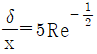
을 이용한다.)- 1
- 5
- 10
- 20
(정답률: 알수없음)
57. 그림에서 뉴턴유체의 층류 흐름을 나타내는 그래프는? (단, 세로축은 전단응력, 가로축은 속도구배이다.)
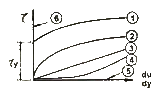
- ① 또는 ⑥
- ③
- ② 또는 ④
- ⑤
(정답률: 알수없음)
58. 어떤 용기 내의 계기압력이 1254.4 kPa 이고, 대기압력이 293.6kPa 이면 용기 내의 절대압력은 몇 kPa 인가?
- 1137
- 1372
- 1548
- 1920
(정답률: 알수없음)
59. 이차원 유동장이
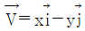
로 주어졌을 때 유선형태의 개략도로 옳은 것은? (단,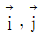
는 x와 y 방향의 단위벡터이다.)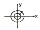
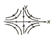
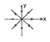
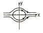
(정답률: 알수없음)
60. 다음 중 압력항력에 대한 설명으로 옳은 것은?
- 운동하는 물체의 전체저항을 말한다.
- 운동하는 물체 앞에서 발생하는 압력에 의한 저항이다.
- 운동하는 물체의 표면마찰에 의한 표면의 접선력의 합이다.
- 유동방향에 따라 표면의 압력차에 의하여 추가로 생기는 항력이다.
(정답률: 알수없음)
4과목: 선체의장 및 선체구조역학
61. 다음 중 데릭(Derrick) 장치에 의한 하역방법이 아닌 것은?
- 스윙식(Swing style)
- 스팬가이식(Span guy style)
- 분동권식(Counter weight style)
- 맞당김식(Union purchase style)
(정답률: 알수없음)
62. 통풍과 채광을 겸한 목적의 의장품은?
- Sky light
- Deck glass
- Fixed window
- Sand glass
(정답률: 알수없음)
63. 체인 속도 20m/min 로 2.5톤의 앵커(Anchor)를 권상하는 양묘기의 유효마력은 약 몇 PS 인가?
- 10.1
- 11.1
- 12.1
- 13.1
(정답률: 알수없음)
64. 암(Arm)의 작동으로 단점을 선내의 격납 위치로부터 선외로 진출시키는 장치는?
- 대빗(Davit)
- 아우트리거(Qutrigger)
- 혼 클리트(Horn cleat)
- 스파이더 밴드(Spider band)
(정답률: 알수없음)
65. 타의 토크가 T1로 주어지고 65°조타에 소요되는 시간이 28초라면 조타에 소요되는 마력(PS)은? (단, T1의 단위는 ton·m 이다.)
- 0.645 T1
- 0.615 T1
- 0.582 T1
- 0.540 T1
(정답률: 알수없음)
66. 선박기관실등 대량의 환기를 필요로 하는 장소에 적합한 통풍통으로 보통 2개가 1조로 되어 있으며 방향의 변화에 의하여 급기 또는 배기의 어느 것에도 사용할 수 있는 것은?
- 벽붙이(Wall) 통풍통
- 버섯형(Mushroon) 통풍통
- 고깔형(Cowl head) 통풍통
- 거위목형(Gooseneck) 통풍통
(정답률: 알수없음)
67. 선박 자체의 위치를 파악하기 위한 장치가 아닌 것은?
- Loran
- Decca
- Chrono meter
- NNSS
(정답률: 알수없음)
68. 앵커체인(Anchor chain)의 1련(Shackle length)의 길이는 몇 m 인가?
- 15
- 20
- 27.5
- 30
(정답률: 알수없음)
69. 페어리더(Fair leader)의 주된 사용 목적으로 옳은 것은?
- 계선줄을 메어두는데 있다.
- 계선줄을 긴장시키는데 있다.
- 계선줄의 단말을 보호하는데 있다.
- 선체 및 계선줄의 보호 및 조작을 원활하게 한다.
(정답률: 알수없음)
70. 다음 중 의장수 계산에 필요한 변수가 아닌 것은?
- 형폭
- 배수량
- 메타센터
- 배의 길이
(정답률: 알수없음)
71. 창구와 강성의 관계에 대한 설명으로 틀린 것은?
- 창구의 폭이 증가하면 비틀림 강성은 감소한다.
- 창구의 길이가 증가하면 비틀림 강성은 감소한다.
- 창구의 모서리 주위에는 큰 응력집중이 발생하므로 특별히 보강해 주어야 한다.
- 강성을 높이기 위해서는 가능한 창구를 크게 하고 모서리 주위는 각을 주도록 한다.
(정답률: 알수없음)
72. 선체종강도 해석에 필요한 것들로만 짝지어진 것은?
- 기관의 출력, 물의 깊이
- 추진기의 출력, 늑골간격
- 기관과 추진기의 출력, 선형계수
- 본전곡선(Bonjean's curve), 1인치 트림모멘트곡선, 배의 깊이
(정답률: 알수없음)
73. 깊이 15m, 너비 20m인 선박의 종횡횡단면에서 선저외판에 5kgf/mm2의 압축응력이 발생하고 있따면 갑판부에는 약 몇 kgf/mm2의 어떤 응력이 발생하겠는가? (단, 중앙횡단면의 도심은 선저에서 5m 의 위치에 있다.)
- 5kgf/mm2의 압축응력
- 10kgf/mm2의 압축응력
- 5kgf/mm2의 인장응력
- 10kgf/mm2의 인장응력
(정답률: 알수없음)
74. 일반적으로 선체의 굽힘모멘트를 계산할 경우 배의 운동으로 인한 동적효과를 무시하는데 이러한 동적효과에 속하지 않는 것은?
- 관성력의 효과
- 슬래밍의 효과
- 종동요의 효과
- 배의 속도의 효과
(정답률: 알수없음)
75. 그림과 같은 중량곡선과 부력곡선을 가진 선박에서 최대굽힘모멘트가 발생하는 곳과 그 값을 옳게 나타낸 것은?
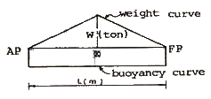
- 선체 중앙에서 WL/12 의 값을 갖는다.
- 선체 중앙에서 WL/24 의 값을 갖는다.
- AP로부터 L/4 지점에 WL/12의 값을 갖는다.
- AP로부터 L/4 지점에 WL/24의 값을 갖는다.
(정답률: 알수없음)
76. 격벽에 보강재를 붙이는 대신에 격벽판에 굴곡시켜 강도를 주는 형식의 격벽명칭은?
- 수밀격벽
- 제수격벽
- 파형격벽
- 창내격벽
(정답률: 알수없음)
77. 탱크 내부구조에서 내부유체의 슬로심(sloshing)시 가장 고려해야 할 보강부의 위치는?
- 내부구조 하단
- 내부구조 상단
- 내부구조 중앙
- 내부구조 바닥
(정답률: 알수없음)
78. 선각에서는 판의 두께가 선체의 치수에 비해서 충분히 작기 때문에 응력이 판의 두께에 걸쳐 균일하다고 가정할 수 있다. 이 때 전단응력과 판의 두께를 곱한 값을 무엇이라 하는가?
- 전단력
- 전단변형도
- 전단흐름
- 전단평균치
(정답률: 알수없음)
79. 일반적인 선체종강도 해석하는 순서로 옳은 것은?
- 중량곡선 작성 → 부력곡선 작성 → 하중곡선 작성 → 전단력곡선 작성
- 하중곡선 작성 → 중량곡선 작성 → 부력곡선 작성 → 전단력곡선 작성
- 하중곡선 작성 → 중량곡선 작성 → 전단력곡선 작성 → 부력곡선 작성
- 하중곡선 작성 → 전단력곡선 작성 → 중량곡선 작성 → 부력곡선 작성
(정답률: 알수없음)
80. 선체의 래킹(Racking)에 관한 설명으로 틀린 것은?
- 횡격벽은 래킹을 방지하는 역할을 한다.
- 선체에 피칭(Pitching)이 발생할 때 주로 발생한다.
- 좌우 양현의 홀수가 달라질 경우 선체의 변형이 일어나는 현상을 말한다.
- 롤링(Rolling)에 의해 선체가 기울어졌다가 다시 돌아올 때 선체의 직각 방향에서 오는 파도와 만난다면 래킹 응력이 가장 크게 발생한다.
(정답률: 알수없음)
5과목: 선박건조공학 및 선박동력장
81. 신조선의 건조를 위한 표준 일정 계획을 하는데 기본이 되는 것은?
- 반입중량곡선
- 가공중량곡선
- 조립중량곡선
- 탑재중량곡선
(정답률: 알수없음)
82. 가공공장 내의 작업장을 작업순서에 따라 옳게 나열한 것은?
- 마킹장 → 재료 적치장 → 굽힘 성형장 → 절단장 → (소조립장)
- 마킹장 → 굽힘 성형장 → 절단장 → 재료 적치장 → (소조립장)
- 재료 적치장 → 절단장 → 마킹장 → 굽힘 성형장 → (소조립장)
- 재료 적치장 → 마킹장 → 절단장 → 굽힘 성형장 → (소조립장)
(정답률: 알수없음)
83. 세미탠덤(Semi-tandem)식 건조법을 사용하여 얻는 주된 효과로 옳은 것은?
- 용접전류를 절약할 수 있다.
- 크레인 사용빈도를 줄일 수 있다.
- 기술이 낮은 작업자를 쓸 수 있다.
- 선대의 잉여 공간을 활용할 수 있다.
(정답률: 알수없음)
84. 지상조립 또는 선대장 조립에서 조립 정밀도를 유지할 목적으로 사용되는 조립용 기준선이 될 수 없는 것은?
- 워터 라인(Water line)
- 프레임 라인(Frame line)
- 버톡 라인(Buttock line)
- 다이아고널 라인(Diagonal line)
(정답률: 알수없음)
85. 블록탑재 시 조양 와이어를 걸어 블록을 이동할 수 있도록 블록의 적절한 위치에 부착시키는 판은?
- 지그(Jig)
- 스티프너(Stiffner)
- 탭 플레이트(Tab plate)
- 아이 플레이트(Eye plate)
(정답률: 알수없음)
86. 다음 중 용접 변형을 줄이기 위한 방법이 아닌 것은?
- 용접 층수를 증가한다.
- 용착량을 되도록 적게 한다.
- 용접 속도를 너무 늦지 않도록 한다.
- 용접 방향을 중심에서 바깥쪽으로 선택한다.
(정답률: 알수없음)
87. 선체 구조용 재료로 너비 50~100mm 정도로 좁게 만든 강판으로, 소형 선박의 격벽이나 갑판실의 보강재 등으로 널리 쓰이는 재료는?
- 주강
- 평강
- 강관
- 주철
(정답률: 알수없음)
88. 블록분할 계획 방법으로 틀린 것은?
- 선수미 블록은 평면블록으로 한다.
- 조립공정을 생각한 블록의 형상을 고려한다.
- 선형결정을 행하기 쉬운 블록으로 분할한다.
- 조립장 및 건조선대의 크레인 능력에 의한 블록중량을 고려한다.
(정답률: 알수없음)
89. 선박설계, 건조 등의 각 시스템을 생산효율을 높이기 위하여 하나로 통합한 컴퓨터통합생산시스템을 무엇이라 하는가?
- CAE
- CIMS
- CAD/CAM
- CALS
(정답률: 알수없음)
90. 강재 전처리 과정에 대한 설명으로 옳은 것은?
- 강재를 공장 내에서 부재의 형상대로 절단하는 작업이다.
- 강판을 프레스 또는 롤러로 선체외판의 형상대로 굽히는 과정을 말한다.
- 강재 용접 후 도장 전 표면정리 및 검사를 하는 과정이다.
- 강재표면의 녹이나 불순물을 제거한 후 도장하는 과정이다.
(정답률: 알수없음)
91. 증기터빈의 열효율을 증가시키는 방법으로 틀린 것은?
- 배압을 높인다.
- 증기 압력을 높인다.
- 증기 온도을 높인다.
- 보일러 압력을 높인다.
(정답률: 알수없음)
92. 선박 프로펠러의 프로펠러효율을 나타내는 식
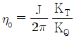
에서 J가 의미하는 것은?- 전진비
- 토크계수
- 프로펠러직경
- 추력계수
(정답률: 알수없음)
93. 실린더 내경이 100mm, 행정 길이가 160mm, 연소실 체적이 100cm2인 기관의 압축비는 약 얼마인가?
- 9.25
- 12.56
- 13.57
- 15.67
(정답률: 알수없음)
94. 전달마력이 10000ps 일 때, 추진마력이 7000ps 이라면 프로펠렇율은 얼마인가?
- 0.30
- 0.70
- 0.80
- 0.85
(정답률: 알수없음)
95. 프로펠러의 작동원리 이론이 아닌 것은?
- 나선형 프로펠러의 순환 이론
- 프로펠러에 대한 상사법칙 이론
- 나선형 프로펠러의 날개 요소 이론
- 프로펠러 작용에 대한 운동량 이론
(정답률: 알수없음)
96. 무부하에서 전부하까지 일정한 기관속도를 유지하는 조속기로서 발전기용 기관에 사용하는 조속기는?
- 정속 조속기
- 속도제한 조속기
- 변속 조속기
- 부하제한 조속기
(정답률: 알수없음)
97. 다음 중 양력(Lift)발생에 의한 추진 원리가 적용되지 않는 것은?
- 돛
- 나선 프로펠러
- 한국의 전통형 노
- 물갈퀴형 바퀴
(정답률: 알수없음)
98. 다음 중 추진축계의 기능이 아닌 것은?
- 프로펠러를 지지하는 일
- 프로펠러의 회전수를 증가시키는 일
- 주기관의 회전동력을 프로펠러에 전달하는 일
- 프로펠러에 발생한 추력을 선체에 전달하는 일
(정답률: 알수없음)
99. 선박에 사용되는 디젤기관 간접역전장치가 아닌 것은?
- 유체 크러치
- 유니언식 역전기
- 롤러 이동식
- 가변피치 프로펠러
(정답률: 알수없음)
100. 다음 중 4행정 선박용 과급 디젤기관의 연속최대출력시 가장 큰 열손실은?
- 복사에 의한 열손실
- 마찰에 의한 열손실
- 냉각에 의한 열손실
- 배기가스에 의한 열손실
(정답률: 알수없음)